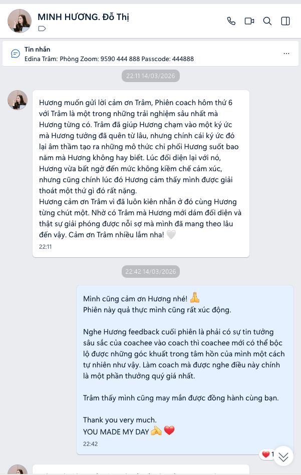
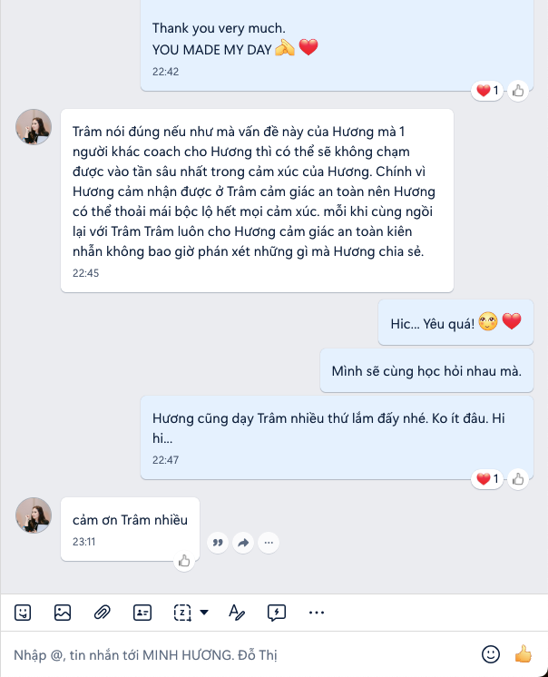
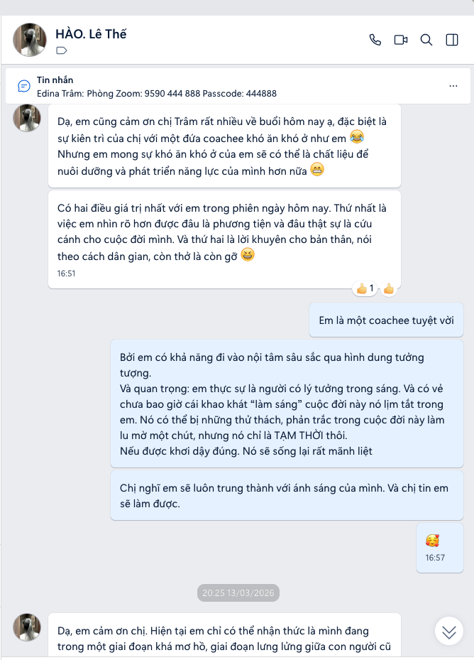
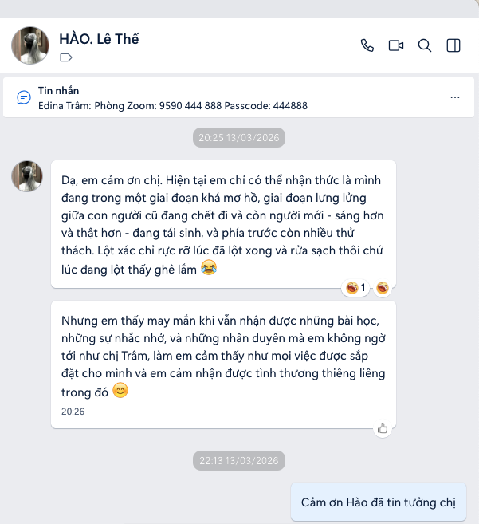

Khách hàng nói gì
về tôi
Tiếng nói từ những người đã đồng hành — thật, nguyên vẹn, không tô vẽ. Mỗi câu chuyện là một hành trình chuyển hoá đã thực sự diễn ra.
Điều quý nhất không phải một lời khen.
Là một con người đã nhận được giá trị chuyển hoá.

Những chia sẻ từ coachee
Chị Hoàng Hương
1984 · Phó phòng Tín dụng KH, Ngân hàng BIDV
Tôi đã sống 40 năm, va chạm xã hội nhiều, nhưng hôm nay tôi mới thật sự "sáng mắt ra". Trâm giúp tôi hiểu tam giác Bi – Trí – Dũng và soi thẳng vào đời mình. Cảm động nhất là câu chuyện với con trai — nhờ Trâm gợi mở, tôi nhận ra gốc rễ nằm ở tâm tham của chính mình. Một tháng trước, lúc bế tắc nhất, tôi đã cầu xin một quý nhân dẫn đường. Và Trâm đã xuất hiện.
Chị Minh Hương
1984 · Boston, Massachusetts (Hoa Kỳ)
Phiên coach với Trâm là một trong những trải nghiệm sâu nhất tôi từng có. Trâm giúp tôi chạm vào một ký ức tưởng đã quên từ lâu — chính ký ức ấy đã âm thầm tạo ra những mô thức chi phối tôi suốt bao năm. Ở Trâm luôn có cảm giác an toàn, kiên nhẫn và không bao giờ phán xét — nhờ vậy tôi mới dám bộc lộ hết và thật sự buông được nỗi sợ mình đã mang theo lâu đến thế.
Anh Lê Thế Hào
1993 · Dịch giả, TP. Hồ Chí Minh
Em cảm ơn chị Trâm, đặc biệt là sự kiên trì với một coachee khó tính như em. Hai điều giá trị nhất trong phiên: em nhìn rõ hơn đâu là phương tiện và đâu mới thật sự là cứu cánh của đời mình; và bài học "còn thở là còn gỡ". Gặp được những nhân duyên không ngờ như chị Trâm, em cảm nhận được một tình thương thiêng liêng trong đó.
Chị Kim Châu
Trưởng phòng Đào tạo, Ngân hàng · Long An
Một hành trình nhìn lại chính mình mà tôi rất trân trọng. (Testimonial video đang được biên tập — sẽ cập nhật đầy đủ.)
Tin nhắn từ coachee
Những dòng gửi ngay sau phiên coach — giữ nguyên như khách hàng đã viết.




Lời chứng qua video
Nghe trực tiếp từ những người đã đi qua hành trình.